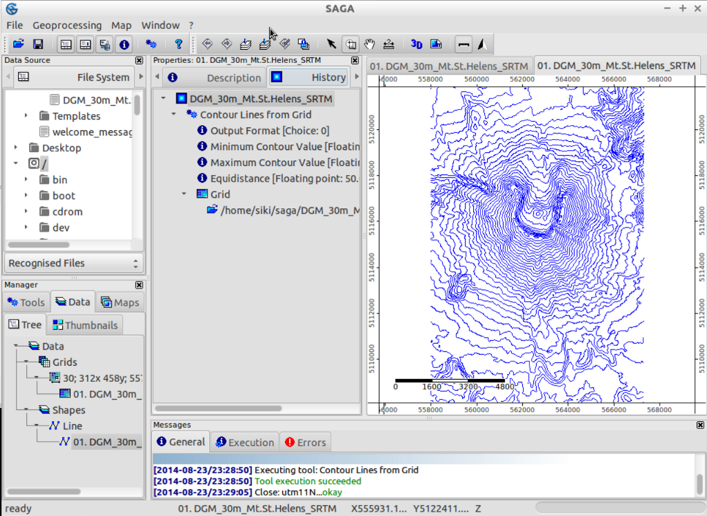

SAGA Snabbstart¶
SAGA (System for Automated Geoscientific Analyses) är ett geografiskt informationssystem (GIS) med öppen källkod som används för att redigera och analysera spatiala data. Det innehåller ett stort antal moduler för analys av vektor- (punkt, linje och polygon), tabell-, rutnäts- och bilddata. Paketet innehåller bl.a. moduler för geostatistik, bildklassificering, projektioner, simulering av dynamiska processer (hydrologi, landskapsutveckling) och terränganalys. Funktionaliteten kan nås via ett GUI, kommandoraden eller genom att använda C++ API.
Innehåll
Kör¶
För att köra SAGA GIS på Live DVD, öppna gruppen Desktop GIS på skrivbordet och klicka på länken SAGA.
När du öppnar SAGA för första gången visas tre underfönster: fönstret Manager, fönstret Object Properties och fönstret Messages. Informationen i fönstret för objektsegenskaper ändras beroende på vad du väljer i fönstret Manager.
Du kan stänga vilket som helst av fönstren (Manager, Object Properties, Data Sources och Messages). Prova att stänga ett av fönstren för att få mer plats på kartan. Du kan visa stängda fönster igen i menyn Window.

Öppningsdata¶
Öppna SAGA GUI och ladda rutnätet /home/user/data/saga/DGM_30m_Mt.St.Helens_SRTM.grd via menyn File|Grid|Load.
Du kommer att få ett meddelande på fliken General i fönstret Messages om denna uppgift har lyckats eller inte. Du bör se något i stil med Load Grid: DGM_30m_Mt.St.Helens_SRTM.grd…okay. När du har laddat datasetet kommer det att visas på fliken Data i fönstret Workspace. Den kommer att listas under Grids och det gridsystem som den tillhör.
I det här fallet kommer informationen om rutnätssystemet att se ut som 30;312x 458y; 557970x 5108130y. Den första siffran är cellstorleken (30 meter), de två följande siffrorna visar antalet celler i x- respektive y-riktningen och de två sista siffrorna är rutnätets ursprung.
Observera
SAGA:s rutnätssystem refereras till i det nedre vänstra hörnet. Detta och annan användbar information om datasetet visas om du väljer fliken Description i fönstret Properties. När du klickar på fliken visas inte bara mer detaljerad information om gridsystemet, utan även gridens värdetyp (här FLOAT), värdeintervall, vissa statistiska mått och minnesstorlek.
Tips
Du kan också ladda data genom att dra och släppa dem i programmet. Prova detta med en av datauppsättningarna i mappen /home/user/data/gdal_natural_earth/.
Visning av data¶
För att visa datasetet i en kartvy:
Dubbelklicka på datasetet i fliken Data i fönstret Workspace. Ett nytt Map-fönster öppnas med datauppsättningen visad. Canvas är inramad: upptill och till vänster visas x- och y-världskoordinaterna. Längst ned och till höger visas linjaler i kartenheter.
Försök att flytta muspekaren över kartan och titta på x-, y- och z-koordinaterna som visas i det nedre fältet i SAGA GUI-fönstret. De z-koordinater som visas motsvarar höjdvärdena i datasetet (tänk på att de värden som visas alltid är de som finns i det dataset som valts på fliken Data eller Maps).
Använd nu navigeringsverktygen för att zooma och panorera. Verktyget Zoom är valt som standard. Ett vänsterklick på kartan zoomar in, ett högerklick zoomar ut. Om du håller ned vänster musknapp, drar till motsatt hörn och släpper upp musknappen kan du zooma till ett område av intresse.
Observera
Om du zoomar in mycket och aktiverar Visa cellvärden på fliken Inställningar kommer du att se att cellvärdena visas. Panorera genom att välja Pan-verktyget och klicka och dra för att flytta kartan. Titta på de andra knapparna i verktygsfältet: med dem kan du t.ex. zooma till Full Extent.

Tips
Saga zoomar mycket snabbt, om du tappar bort dig när du bläddrar i dina data klickar du på knappen ”Zooma till full omfattning” i verktygsfältet
Skapa en skuggad reliefkartvy¶
Vi kommer att förbättra kartvisningen genom att beräkna en skuggad reliefkarta.
Byt till fliken Verktyg i fönstret Manager och klicka på triangeln till vänster om modulbiblioteket Terrain Analysis - Lighting, Visibility: listan med modulerna i detta bibliotek visas.
Välj nu modulen Analytical Hillshading och välj sedan fliken Settings i fönstret Properties. Då visas modulens parametrar (titta även på fliken Description, där du hittar mer information om modulen och dess parametrar).
Klicka i den högra kolumnen i parametern Grid system (där [not set] visas) och välj grid-systemet för Mt. St. Helens dataset (30; 312x 458y; 557970x 5108130y).
Klicka sedan i den högra kolumnen i parametern Elevation och välj dataset. Klicka i den högra kolumnen i alternativet Shading Method och välj Standard. Tryck nu på knappen Apply och sedan på Execute. Ett nytt dataset som innehåller hillshade kommer att beräknas.
Ta en titt på fliken Data i fönstret Workspace - där hittar du den nyskapade datasetet.
Dubbelklicka på datasetet ”Analytical Hillshading” och välj New i dialogrutan som dyker upp. Då visas datasetet i en ny kartvy. När du har inspekterat datasetet stänger du Map-fönstret genom att välja Close på Window-menyn.
Dubbelklicka nu på hillshade-datasetet igen, men välj kartan som innehåller höjddatasetet i dialogrutan som dyker upp (Lägg till lager på vald karta). Detta kommer att placera hillshade ovanpå elevationsdatasetet.

Växla till fliken Maps i fönstret Manager. På fliken Tree visas posten för din karta och de dataset som kartan består av. Ritningsordningen är uppifrån och ned. Högerklicka nu på datauppsättningen ”Analytical Hillshading” och välj Move To Bottom från snabbmenyn som dyker upp. Detta ändrar ritningsordningen och placerar bergsskuggan under höjddatasetet (som nu visas igen i kartvyn).
Välj nu höjddatasetet (genom att vänsterklicka) och ta en titt på fliken Settings i fönstret Properties. Leta upp avsnittet Display i parametrarna och klicka i den högra kolumnen i alternativet Transparency. Ange ett värde på 30 och tryck på knappen Apply. Nu kommer du att se dina höjdvärden skuggade av relief.
Prova gärna andra transparensinställningar eller till och med andra skuggningsmetoder i modulen Analytical Hillshading (om du inte ändrar parametern för utdataset kommer ändringarna att skrivas till det redan skapade rutnätet, dvs. du kommer att se ändringarna i kartvyn omedelbart).

3D-visualisering¶
I ett nästa steg kanske du vill visualisera din karta i 3D.
Se till att Map-fönstret är valt och tryck på knappen Show 3D-View i verktygsfältet. I dialogrutan som dyker upp väljer du det rutnätssystem som innehåller din höjddatauppsättning och anger Mt. St. Helens-datauppsättningen som höjdparameter. När du trycker på knappen Okay visas 3D-vyn av din karta. Håll vänster musknapp intryckt och flytta musen för att rotera och luta kartan.
Använd mushjulet för att zooma in/ut och högerknappen för att flytta kartan. Ta också en titt på verktygsfältet i 3D-vyn: knapparna replikerar musfunktionerna och erbjuder ytterligare funktionalitet. För att stänga 3D-vyn väljer du alternativet Stäng i menyn Fönster.

Skapa konturlinjer¶
Som en kort introduktion till SAGAs vektorfunktioner kommer vi nu att generera konturlinjer från den digitala höjdmodellen.
Detta kan göras med hjälp av Shapes - Grid | Contour Lines From Grid om du öppnar verktygsfliken i hanteraren, eller så kan du lika gärna öppna modulen med hjälp av menyn: Geoprocessing|Shapes|Grid|Vectorization.
Välj ditt rutnätssystem och rutnät (detta måste vara höjden). Du kan låta alternativen vara som de är, men det kanske är bättre att välja ett ekvidistans på 50 m i stället för standardvärdet 10 m.
Några sekunder senare har din konturkarta genererats och du bör hitta den under datafliken i arbetsytan. Prova att öppna konturkartan i en ny karta. Alla konturlinjer har nu samma färg, vilket inte är så tilltalande.
Om du väljer din datauppsättning (i arbetsytan, fliken Data) och kontrollerar inställningarna i fönstret Object Properties, kan du hitta ett avsnitt: Display: färgklassificering. Du kan ändra klassificeringen från ”Unik symbol” till graderad färg. Då bör du fortfarande justera attributet som används för denna graderade färg till höjden. Tryck på apply och du får fram färgade konturlinjer.
Kontrollera din historik¶
Om du väljer en datauppsättning (t.ex. dina konturlinjer) på datafliken i fönstret Manager kan du ändra fliken Object Properties till ”History” för att granska vilken modul och vilka alternativ som användes för att skapa datauppsättningen. Denna information sparas också när du sparar dina filer (i .mshp- och .mgrd-filer).
{kind=link}
Tips
Du kan skapa en verktygskedja från din historik - vilket gör att du kan köra en kedja av moduler igen med fasta alternativ. En handledning finns på https://rohanfisher.wordpress.com/saga-tool-chains/
Sparar data¶
För att spara det arbete som du har skapat ska du öppna datafliken i arbetsytan och högerklicka på den fil som du vill spara. SAGA sparar gridfiler i sitt eget format (*.sgrd) och shapefiler i ESRI:s standardformat för shapefiler (*.shp). Det är också möjligt att spara projektet genom att välja File|Project|Save Project As. Då sparas alla kartvyer och datainställningar, och datafilerna kan också sparas.
Importera/exportera data¶
Under huven kan SAGA också använda GDAL-biblioteket för att öppna olika raster- och vektorformat. Det enklaste sättet är att använda File|Grid|Open för rasterdata och File|Shapes|Open för vektordata. För raster stöds bland annat geotiff. Observera att du också kan dra och släppa filer på SAGA. Mer avancerade alternativ och moduler finns under Geoprocessing|File|Grid.
Tips
SAGA GIS gridformat stöds av GDAL sedan version 1.7.0. Gridfiler som sparats av SAGA kan öppnas av många andra program som använder GDAL. Du måste dock öppna filen ”*.sdat” och inte filen ”*.sgrd”.
I det här exemplet använder vi digitala höjddata (SRTM) från regionen runt Barcelona som du skulle ladda ner från webben.
Datafilen som vi vill använda heter SRTM_u03_n041e002.tif och finns under /home/user/data/raster . Du kan importera den med hjälp av modulen Import/Export GDAL/OGR, som också finns i Geoprocessing|file|import raster.
När du har importerat denna dataset och öppnat den i ett nytt fönster kommer du troligen att bli besviken: Det ser helt grått ut! Låt oss kolla vad som kan vara orsaken: Vissa pixlar nära kusten verkar ha ett mycket litet värde (-32768) (du kan kontrollera värdet för en pixel genom att kontrollera Z:-värdet i statusfältet när du för musen över rutnätet).
Dessa pixlar har faktiskt inga data, så vi bör justera nodata-inställningarna: i fönstret för objektegenskaper (efter att du har valt datasetet i arbetsytans fönster) ställer du in det maximala värdet för inga data till -32768 och tillämpar. Därefter kan vi återställa vår färgskala så att den passar dataintervallet. En enkel metod är att högerklicka på rutnätet i arbetsytan och välja ”Classification|Set Range to minimum maximum”.
Du är nu redo att upprepa de första stegen för att skapa en skuggad karta eller utforska några av de andra modulerna i SAGA!
Hur vill du gå vidare?¶
More documentation can be found on the SAGA website: